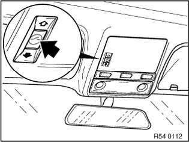
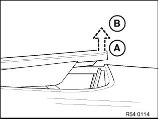

Sunroof / Moonroof: Testing and Inspection
54 0 ... Notes on glass slide/tilt sunroof (initialisation/normalisation/Learning of characteristic curve)

NOTE: Initialisation comprises:
- Normalisation
- Learning characteristic curve
The mechanical end positions are recorded and stored during normalisation.
The characteristic curve is learnt immediately after normalisation.
When the characteristic curve is learnt, the mechanical closing forces of the glass sunroof are recorded and stored for correct operation of the anti-trapping mechanism.
Initialisation is started and implemented by pressing and holding switch in "Lift" direction.
Initialisation depends on installed roof system and software used.
NOTE: Then carry out initialisation:
- if the glass sunroof has been mechanically moved by means of the emergency actuator
- in the event of malfunctions, e.g. no one-touch function, no opening or no comfort function possible
- after disengagement of the drive unit
- after work is carried out on the mechanism of the glass sunroof
- after the control unit has been replaced
- after replacement of circumferential gasket

WARNING: The anti-trapping mechanism is not active during initialisation.
For correct initialisation and function, the following conditions must be met:
- Ignition ON
- at room temperature (23 °C ± 5 °C)
- No direct solar radiation
- only when vehicle is at a standstill
- Fully charged vehicle battery
- in addition, for US vehicles, let engine run to enable key, if necessary
NOTE: Subsequently described processes relate to a completely closed roof system. However, initialisation can be started from any position.

Initialisation process:
- Move switch in "Lift" direction and hold (roof system moves to "Lift" position)
- In the event of delayed starting or sudden stopping of the glass sunroof, continue pressing the switch in the "Lift" direction

NOTE: Hold switch depressed for entire process.
- After reaching the fully raised position (A), keep the switch pressed for approx. 30 seconds further (initialisation process starts)
- Glass sunroof moves briefly from lift end position (A) in direction of position (B)
- Glass sunroof moves to "Closed" position
- Glass sunroof then moves to "Open" end position and immediately back to "Closed" position
NOTE: Initialisation is completed once the glass sunroof is completely closed. Switch can be released.
NOTE:
- If the switch is released in the meantime, the entire procedure must be repeated
- On completion of successful initialisation, the corresponding messages in the check control and the control display go out
- Carry out function check (tip function, antitrapping protection and, if necessary, comfort function)